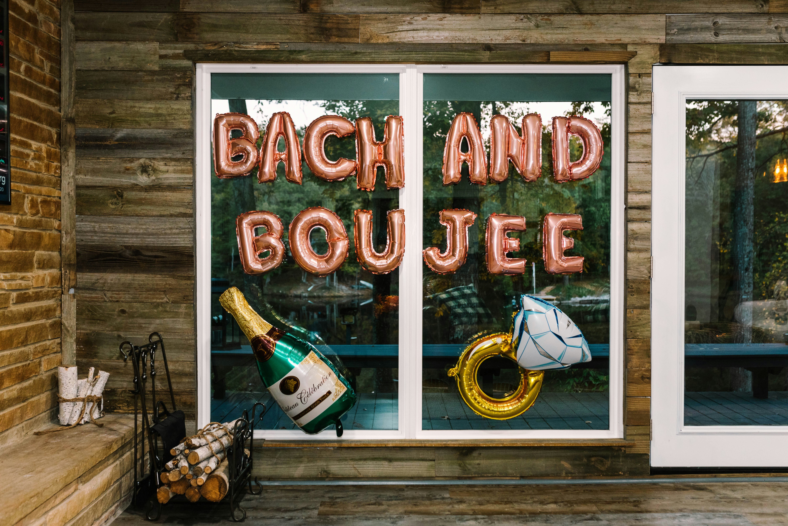

Your complete guide to heel-friendly areas and the most convenient downtown stays for your girls' weekend

Planning a Charleston bachelorette party means choosing the right neighborhood where your crew can strut from brunch to bars without breaking an ankle. Charleston's historic charm comes with cobblestone streets and uneven sidewalks, so picking a walkable, heel-friendly area is crucial for keeping the party going all weekend long.
Best for: The ultimate bachelorette party hub with modern sidewalks, countless bars, restaurants, and boutiques all within stumbling distance.
Why it's heel-friendly: Upper King (roughly from Calhoun Street to Spring Street) features the newest, smoothest sidewalks in downtown Charleston. The area was redeveloped in recent decades, meaning wide, flat, concrete walkways that are kind to heels.
👠 Heel Survival Tip
Stick to King Street itself and Cannon Street for the smoothest surfaces. The side streets heading toward Meeting Street have better sidewalks than those heading east toward East Bay.
Best for: Central location with shopping, dining, and easy access to both King Street and the Waterfront.
Why it's heel-friendly: Market Street from Meeting to East Bay is relatively flat and well-paved. It's the main tourist thoroughfare, so the city keeps it maintained.
👠 Heel Survival Tip
The cobblestones around the Old City Market look charming but are murder on stilettos. Walk on the smooth sidewalk perimeter, not through the market pavilion itself.
Best for: High-end dining, cocktail bars, and upscale boutiques in Charleston's most sophisticated district.
Why it's moderately heel-friendly: Lower King (Broad Street to Market Street) has narrower, older sidewalks with occasional brick sections. Still very walkable, but requires more attention.
👠 Heel Survival Tip
Stay on King Street proper. The cross streets like Queen and Tradd have charming brick sidewalks that look great in photos but will absolutely wreck your heels and ankles.
Best for: Waterfront dining, Rainbow Row photos, and quick access to both nightlife and historic sites.
Why it's moderately heel-friendly: East Bay has recently renovated sections with smooth sidewalks, but some stretches still feature historic brick and cobblestone.
👠 Heel Survival Tip
The section from Market to Broad Street has the best sidewalks. If heading to Rainbow Row or The Battery, consider bringing wedges or block heels for better stability on the historic walkways.
Best for: Historic charm, art galleries, and intimate dining experiences.
Why it's challenging in heels: The French Quarter is Charleston's oldest neighborhood with narrow streets, brick sidewalks, and cobblestones throughout.
👠 Heel Survival Tip
Save the French Quarter for daytime exploration in flats or wedges. If you must wear heels here at night, bring heel protectors or stick to venues where you can Uber directly to the door.
🥿 Smart Footwear Strategy for Your Charleston Bachelorette
Day: Cute sneakers, espadrilles, or wedges for brunch and shopping on King Street.
Evening (Upper King): Block heels, chunky platforms, or stylish booties work great on modern sidewalks.
Evening (Historic areas): Wedges, kitten heels, or heeled booties provide better stability.
Emergency backup: Keep foldable flats in your bag. Seriously. Every Charleston bachelorette veteran has a blister story.
Pro move: Heel caps or protectors prevent stiletto heels from sinking into cobblestone cracks.
Location is everything for a bachelorette weekend. Stay in one of these areas to minimize Uber costs and maximize stumbling-distance access to Charleston's best bars, restaurants, and entertainment.
Top picks:
Why stay here: You can walk to 90% of Charleston's best bachelorette destinations without calling an Uber. Upper King puts you at the epicenter of nightlife, dining, and shopping. Modern sidewalks mean heels-friendly walking. Rooftop bars, cocktail lounges, and dance clubs are all within 3-5 blocks.
Top picks:
Why stay here: Perfect central location gives you equal access to King Street nightlife and waterfront dining. Close to Charleston City Market for daytime activities. Easy walk to both Upper King bars and Lower King upscale restaurants. Mix of price points available.
Top picks:
Why stay here: Best choice for an upscale, classy bachelorette experience. Walk to high-end dining (Peninsula Grill, Hall's Chophouse, FIG). Close to cocktail bars and wine lounges rather than rowdy clubs. Beautiful historic surroundings for daytime photos. Quieter at night than Upper King.
Best neighborhoods for Airbnb/VRBO:
Why rent a house: More space for getting ready together, full kitchens for brunch prep, often more affordable for large groups. Ability to host pre-game gatherings. Private outdoor space for poolside hangs. Look for properties within a 10-minute walk to Upper King Street for best results.
🗺️ Location Strategy by Bachelorette Vibe
Party-focused crew: Upper King Street for maximum nightlife access and late-night walkability
Classy & sophisticated: Lower King or French Quarter for upscale dining and elegant experiences
Mixed group: Market Street area for balanced access to everything Charleston offers
Budget-conscious: Upper King chain hotels or Radcliffeborough vacation rentals
Large group (8+ people): Cannonborough house rental with easy walk to Upper King
Downtown Charleston is about 1.5 miles long and 0.5 miles wide. Upper King to The Battery is roughly a 20-minute walk in flats, 30+ minutes in heels. Plan accordingly.
Charleston summers are brutally hot and humid. Factor in heat exhaustion when planning long walks. Spring and fall offer the most comfortable walking weather.
Even in the most walkable neighborhoods, download Uber and Lyft. Late-night options, unexpected rain, and heel emergencies happen. Budget for occasional rides.
Explore our comprehensive guides to plan the perfect Charleston bachelorette party